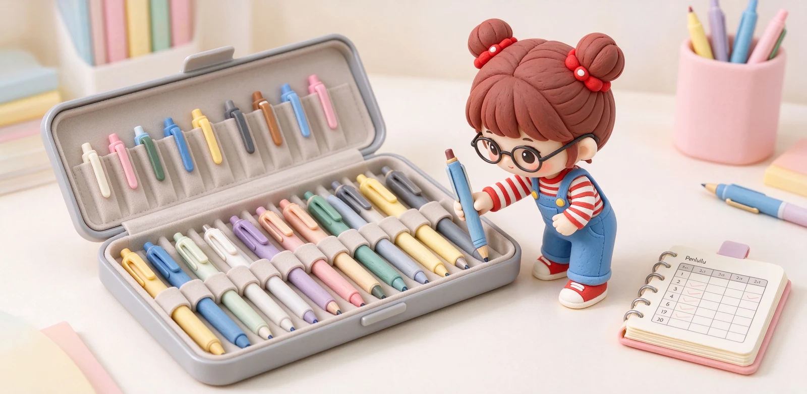

語意摘要：喜歡文具很正常，但從愛好變成負擔，往往是因為只有衝動採買、沒有系統。文具控的進化分三步：先設一個主題（例如只收某個品牌、某種筆型、或某個色系）、幫每支筆建立使用紀錄、再用防壓防潮的方式收納。收藏的樂趣在於「使用與理解」，而不是把筆鎖進盒子裡從此不碰。
亂買的問題在哪：快感很短，空間很貴
多數人剛入坑時都經歷過同一條路：看到可愛的就買、看到聯名就收，半年後抽屜塞滿，卻每天還是只用那兩三支。問題不在文具不好，而在你買的是「當下的興奮」，不是「長久的需要」。
一個簡單的檢查：家裡有沒有買來沒拆封、或拆了從沒裝上水的筆？有，代表你已經從收藏滑向囤積，該停下來整理了。
第一步：幫收藏設一個主題
| 主題類型 | 舉例 | 好處 |
|---|---|---|
| 品牌主題 | 只收百樂或 LAMY | 易理解品牌演化 |
| 筆型主題 | 只收活塞上墨鋼筆 | 深入一種機制 |
| 色系主題 | 專收藍色系墨水 | 玩顏色最療癒 |
| 年代主題 | 收復古二手筆 | 有故事感 |
有了主題，你逛文具行時就會自動過濾：這支屬於我的主題嗎？不屬於就放回去。這不是消滅熱情，而是讓每一次購買都更值得。

第二步：幫每支筆建立「戶籍」
真正懂收藏的人，不是買得多，而是記得清楚。幫每支筆建立一條簡單紀錄：哪裡買的、筆尖粗細、上墨方式、搭配什麼墨水、寫起來什麼手感。一本筆記或一個表格就夠。
- 筆名＋購買日期＋來源。
- 筆尖（F／M）與上墨方式。
- 最常用的墨水顏色。
- 一句手感註記（順／刮紙／偏粗）。
鋼筆玩家圈流行做「試色卡」：把每瓶墨水在紙上畫一道、標上顏色名字。這本卡片會成為你最寶貴的資料，比再買十瓶新墨水有用。
第三步：收納要讓筆「活著」
文具收藏最可惜的下場，是全部塞進防潮箱、從此不碰。好的收納要兼顧保護與好拿：鋼筆用有防壓、防滾的筆盒或筆套，筆尖朝上；墨水瓶直立、避免陽光直射；常用的筆放桌面好拿的位置，不要收進最深的抽屜。
收藏的最高原則是「讓心愛的筆輪流被使用」。買十支筆、每天卻只用一支，那九支的存在就只是佔空間。定期讓每支筆上場寫一寫，才是對收藏的尊重。
給正在入坑的你一句真心話
不用。收藏的核心是理解與體系，不是金額。用便宜的筆把每種筆尖、每個上墨方式都玩過一輪，比直接買一支名筆更有收穫。
設一個「出清循環」：半年內沒用過的，轉售或送給需要的人。騰出空間，也讓文具到更懂它的人手裡。
有主題就不容易。主題讓你學會忍手，把錢集中在真正想要的東西上，反而比亂買更省。
常見問題 FAQ
文具控跟亂買差在哪？
差在有沒有主題與系統。亂買是看到什麼收什麼、堆滿抽屜；文具控是圍繞一個主題收藏、記錄每支筆的特性，並讓它們輪流被使用。
收藏要怎麼開始設主題？
可以從品牌（只收某牌）、筆型（只收某上墨方式）、色系（專收某色墨水）或年代（復古筆）選一個切入。有主題後，非主題的東西就學會忍手。
要不要把筆全部收起來保存？
不建議。收藏的樂趣在使用。鋼筆用防壓筆盒、筆尖朝上收，墨水瓶直立避曬，但常用的筆要放好拿處，定期讓每支筆上場。
鋼筆玩家說的試色卡是什麼？
就是把每瓶墨水在紙上畫一道、標上顏色名字與日期的卡片。它是你最實用的顏色資料庫，比再買新墨水更能幫你選色。
買太多用不到的文具該怎麼處理？
設一個出清循環：半年沒用過的，轉售或送人。騰出空間、也讓文具到更需要的人手裡，這是維持收藏健康的好習慣。
資料來源與核實依據
- 鋼筆收藏與上墨機制分類（卡式、吸墨器、活塞、真空）（LAMY 台灣官方購物）
- 筆盒筆袋：防滾、防壓、攜帶與收藏筆盒的挑選邏輯（豐原行 Feng Yuan Pens）
- 墨水保存、沉澱與試色觀念（收藏與記錄）（Springfield Pens）
相關文章推薦

桌面文具收納怎麼規劃？抽屜、筆筒、旋轉座與文具斷捨離
桌面收納的黃金準則是「動線」：每天用的放手邊一臂距離，一週用幾次的進抽屜，一年用不到的就該斷捨離。

鋼筆筆盒怎麼選？防滾、防壓、攜帶與收藏筆盒的推薦邏輯
鋼筆筆盒的核心需求就三個：不要讓筆在裡面亂滾、不要被外面壓到、內裡要軟到不會刮傷筆身；先認這三點再談材質與外觀。

金尖跟鋼尖差在哪？鋼筆筆尖軟彈、回彈與預算解析
金尖貴不是因為黃金本身值多少，而是它比較軟、能隨按壓張開又回來；但不是每個金尖都軟，也不是每個鋼尖都硬，關鍵在厚薄與設計。